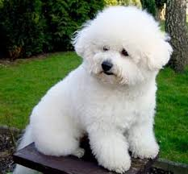

raza perro: french poodle
Esta hermosa raza está nuevamente de moda en el mundo. Son muy inteligentes, guardianes y fieles a su amo, les encanta estar pegados a estos.
caracteristicas:
Hay cuatro clases de caniches: estándar o gigante, mediano, enano y toy, y cada clase tiene diferentes colores: marrones, crema, rojizos, negros, gris y blancos.
– Los estándar o gigantes pesan entre 65 y 75 lbs (30-35 kg.) y miden entre 45 y 60 cm. de alto.
– Los medianos pesan alrededor de 26 lbs. (12 kg.) y miden entre 35 y 45 cm. de alto.
– Los enanos pesan entre 12 y 17 lbs. (6 y 8 kg.) y miden entre 28 y 35 cm. de alto.
– Los toy pesan entre 6 y 9 lbs. (3 y 4 kg.) y miden menos de 28 cm. de alto.

Son perros muy amigables, saltarines, carismáticos y juguetones. Necesitan de cuidados permanentes, especialmente por su cabello, ya que se ensucia y enreda fácilmente. Es recomendable llevar una o dos veces por mes a la peluquería canina, para que le recorten el pelo de la cara, ya que éste suele taparle la visión.
Viven hasta los 18 años aproximadamente. Esta raza necesita de una alimentación variada y de calidad, porque son perros muy delicados y tienen un gusto “especial” para elegir su comida.
Esta raza suele tener sus huesos muy débiles, por eso no es recomendable subirlos a las sillas, camas y lugares altos, ya que al mínimo golpe pueden quebrar sus huesos.